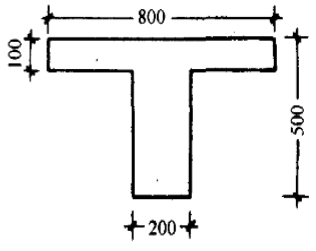

跳到主要内容
东南大学
混凝土结构教学平台
教师端
学生端
教师端
课前选题
课堂统计
课堂记录
钢筋混凝土梁承载力计算
课前选题
清空选择
搜索题目
知识点
全部知识点
构造要求与材料
受弯工作阶段
受弯破坏与配筋率
正截面计算基本原理
单筋矩形截面
裂缝与正常使用
刚度与变形
双筋矩形截面
T形截面
斜截面破坏与影响因素
受剪承载力计算
斜截面构造与弯起钢筋
补充题库：受扭与弯剪扭
补充题库：连续梁内力分析
题型
全部题型
单选题
填空题
判断题
题目列表
134 道
上一页
1 / 23
下一页
钢筋混凝土梁承载力计算
课堂统计
未开课
已交答卷
0
份
本组题目
0
道
收答状态
未开始
选项分布
暂无答卷
钢筋混凝土梁承载力计算
课堂记录
课堂
题数
答卷
暂无课堂记录
钢筋混凝土梁承载力计算
课堂答题
课堂未开始
